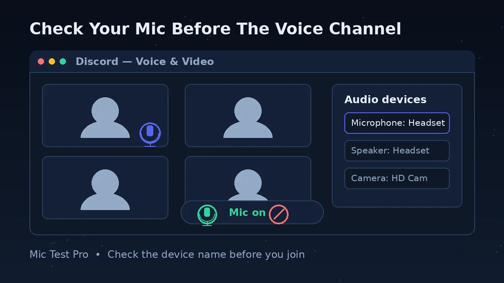
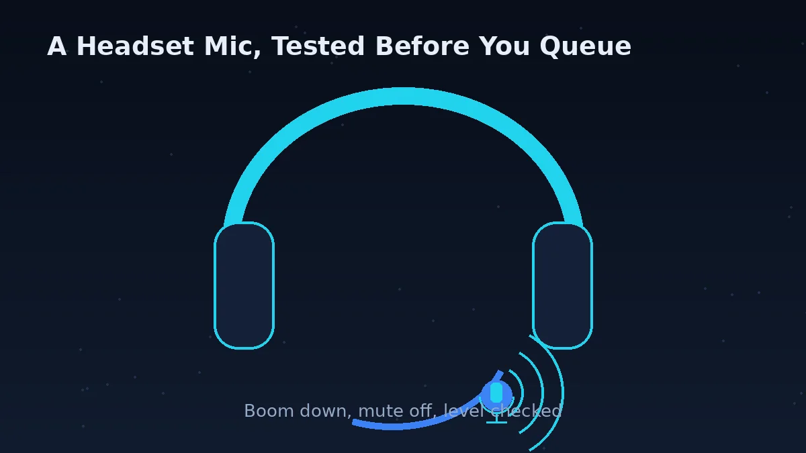
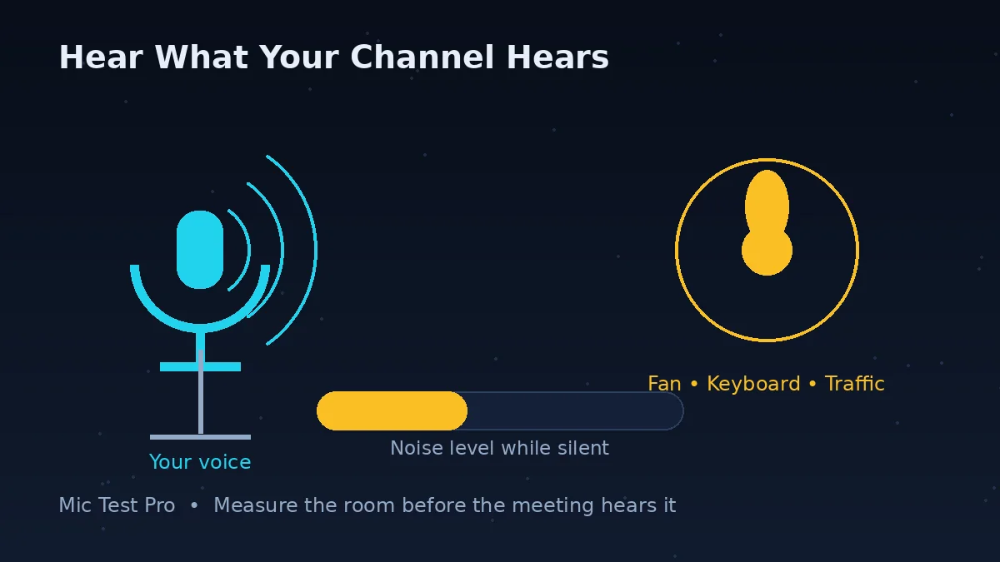
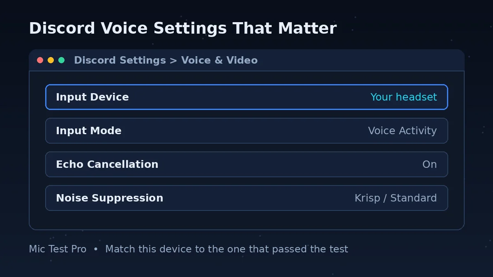

Why Check Your Mic Before A Discord Call?

Short answer: Discord has more ways to silence a working microphone than almost any other app — a wrong input device, a sensitivity gate, push-to-talk, a server mute — and each one looks identical from your side: silence.
Discord does have a built-in mic test (the Let's Check button in Voice & Video settings), but it needs you signed in and inside the app, and it can only tell you that Discord hears nothing, not why. This page gives you the outside view first: open it in a browser tab, click Start Mic Test, allow access, and speak. If the waveform and input level move here, your mic, cable and system settings are all healthy, and whatever is wrong lives in Discord's settings. If nothing moves here, no Discord setting will save you — fix the device or the system input first.
The noise reading matters on Discord more than on most apps. Discord sends your voice through a sensitivity gate and optional AI noise suppression, and both behave badly when the raw signal is noisy or too quiet. Knowing your noise level and input level before you join tells you in advance whether you need push-to-talk, Krisp suppression, or a quieter room.
It is also the fastest check after switching headsets or PCs, which is when Discord most often defaults back to the wrong microphone — the moment most people start asking why isn't my mic working on Discord.
How To Test Your Mic Before Discord

Click "Start Mic Test" above and allow microphone access in your browser. If you refused access earlier, click the lock or site-settings icon in the address bar, set Microphone to Allow, and reload.
Speak at your normal call volume and watch the waveform and input level. Both should move clearly when you talk and settle when you stop.
Stay silent for a few seconds and note the Noise Level reading. A high reading in a quiet room means Discord will need help: Krisp noise suppression, push-to-talk, or a less sensitive microphone position.
If the level stays flat here, stop. Change your system's default input device (Windows: Settings > System > Sound > Input; Mac: System Settings > Sound > Input), check for a physical mute switch on the headset or cable, and test again.
Once this test passes, open Discord: User Settings (cogwheel) > Voice & Video. Set Input Device to the same mic, confirm Input Mode is Voice Activity unless you mean to use push-to-talk, then click Let's Check under Mic Test and listen to the playback.
Common Discord Microphone Issues
Input Sensitivity Gate
Discord only sends your voice when it rises above a sensitivity threshold. Set that threshold above your quieter speech and the start and end of your sentences vanish. Discord not picking up mic input at all is usually this gate set too high — or the wrong input device. It is the single most common reason voices cut out on Discord, and the fix is manual sensitivity: turn off the automatic option in Voice & Video and set the slider while you speak.
Wrong Device Selected
Discord can default to the wrong microphone after plugging in a new headset: a webcam mic, a monitor mic, or the laptop's built-in array instead of the headset you are wearing. The device is always named in User Settings > Voice & Video, and it must match the device that passes this test.
Muted Without Knowing
Three different mutes can silence you: your own mute button in the voice panel, a server mute applied by a moderator, and priority-speaker or permission settings in a channel. A server mute shows a muted icon you cannot clear yourself. If this test hears you and your Discord settings are right, ask a mod whether you are server-muted before reinstalling anything.
Background Noise Pickup
Sensitive condenser mics pick up fans, traffic and mechanical keyboards, and Discord's gate opens for all of it. This test's noise reading shows the problem before your friends hear it. In Discord, Krisp noise suppression (Voice & Video > Noise Suppression) removes most steady background noise; push-to-talk removes all of it, at the cost of holding a key.
Discord Mic Problems: Problem, Cause, Fix

| Problem | Most likely cause | Fix | Check on this page |
|---|---|---|---|
| Discord is not detecting any input from your mic | Discord is using a device that receives no signal, or the system is blocking it | Test here first. If this page is silent too, fix the system input and browser or app permission. If this page hears you, set the same device under User Settings > Voice & Video > Input Device. | Input Level stays at 0% when you speak |
| Voice cuts off at the start or end of sentences | The input sensitivity gate is set above your quieter speech | Turn off Automatically determine input sensitivity and lower the manual slider until your full sentences light up the bar. | Waveform shows gaps at the start of sentences |
| Robotic, choppy or underwater voice | Packet loss on Wi-Fi, a loaded router, or heavy voice processing on a busy CPU | Try a wired connection, pause downloads and streams, and compare another server or channel. Test with noise suppression off to remove one processing step. | Quality reading drops while you speak |
| Everyone says you are too quiet | Low input volume, a mic positioned too far away, or the wrong device active | Bring the mic closer first. Then raise Input Volume in Voice & Video and confirm the named device is the one you are speaking into. | Input Level barely moves at normal distance |
| Friends hear themselves echo through you | Your speakers are feeding your microphone | Use headphones. If you must use speakers, turn on Echo Cancellation in Voice & Video and lower the speaker volume. | Noise Level jumps when others speak |
| Mic works in this test but not in the Discord app | The app is set to a different device, push-to-talk is on, or you are server-muted | Match the Input Device, check Input Mode is Voice Activity, and look for a server-mute icon. As a last resort, Reset Voice Settings at the bottom of Voice & Video. | This page hears you — the fault is in Discord |
| Krisp makes your voice sound clipped | The AI suppression is treating parts of your voice as background noise | Switch Noise Suppression from Krisp to Standard, or turn it off, then compare using the Let's Check playback. | Waveform is clean here but clipped in Discord |
| Error 3002: Silent Audio Input | The mic is connected but no sound reaches Discord | Check your system input volume is not very low, check the physical and software mute, and run the Let's Check mic test. If this browser test is also silent, the fault is the device or system, not Discord. | Input Level flat — re-check the Device name |
| Discord microphone not working in any channel — no input anywhere | Microphone not working on Discord because the wrong device is selected, or the mic is muted at the system level | Test here first. If this page hears you, set the same device in User Settings > Voice & Video > Input Device and check the mute. If this page is silent too, fix the system input first. | Input Level moves when you speak |
How To Use Discord's Own Mic Test (Let's Check)
Short answer: User Settings > Voice & Video > Mic Test > Let's Check — then speak and listen to the playback.
Discord's built-in test exists on desktop and in the browser. Click the cogwheel at the bottom left to open User Settings, open the Voice & Video tab, and under Mic Test click Let's Check. Your voice plays back through your selected output device, which is the closest you can get to hearing what your friends hear. Click Stop Testing when you are done. The mobile app does not include this test, which is one reason this browser page exists.
Two things catch people out. First, if you start the test while you are already connected to a voice channel, Discord automatically mutes and deafens you until the test ends — you have not broken anything, and you can talk again as soon as you stop the test. Second, the playback only proves Discord received audio; if the playback sounds noisy or clipped, the problem is your raw signal or your Discord processing settings, and the readings on this page (noise level, input level) tell you which.
The Three Discord Settings That Fix Most Mic Problems

Input sensitivity. In Voice & Video, Discord can determine input sensitivity automatically or let you set it with a slider. Automatic mode is fine until it is not: soft-spoken voices, quiet rooms and mics placed further away all fool it. If your voice cuts out, turn the automatic option off and set the slider while speaking at your normal volume — everything you say should light up, and silence should not.
Noise suppression. Under Noise Suppression in the same tab you can choose Krisp, Discord's AI option, Standard suppression, or none. Krisp is the strongest and removes fans, typing and street noise, but it uses extra CPU and can clip unusual voices. Use this page's noise reading to decide: a high reading at silence means suppression is worth it; a low reading means you can keep the cleaner, unprocessed sound.
Reset Voice Settings. At the very bottom of Voice & Video sits Reset Voice Settings. It returns every voice option to default. Use it when you have changed so many toggles that you no longer know the state of your settings — it is faster than auditing them one by one, and you can rebuild your setup in a minute with the Let's Check test and this page open side by side.
Discord Mic Test FAQs
Why is Discord not detecting my microphone?
Discord not detecting mic input means the input device it is using receives no signal. First run this test: if this page cannot hear you either, the problem is the mic, a mute switch, or your system input settings, and Discord cannot fix that. If this page hears you, open User Settings > Voice & Video in Discord, set Input Device to the mic you just tested, and check that Input Mode is not set to Push to Talk with a key you are not pressing. Discord's own name for a connected mic that stays silent is error 3002, Silent Audio Input. If Discord cannot detect a mic at all, it calls that error 3001 — it means no microphone is physically connected and recognised by your system.
Why is my mic not working on Discord but works elsewhere?
Discord has its own input device and sensitivity settings, separate from your OS. Confirm the mic works here first, then check Discord's Voice & Video settings: the input device named there must be the device you actually speak into, and the sensitivity gate must open when you talk.
How do I use Discord's built-in mic test?
On desktop or in the browser, click the cogwheel (User Settings) at the bottom left, open the Voice & Video tab, find Mic Test and click Let's Check. Speak, and your voice plays back through your output device so you can hear what others hear. Click Stop Testing when you finish. One warning from Discord itself: if you run the test while connected to a voice channel, you are automatically muted and deafened until the test ends. The mobile app does not have this test.
Should I turn off automatic input sensitivity in Discord?
If people say your voice cuts off at the start or end of sentences, yes. Automatic sensitivity guesses where your voice level sits, and when it guesses wrong the gate closes mid-sentence. In User Settings > Voice & Video, turn off Automatically determine input sensitivity and set the slider by hand: speak at your normal volume and lower the slider until everything you say lights up, then raise it just enough that keyboard and fan noise stay below the line while you are silent.
Why does my voice keep cutting out on Discord?
The most common cause is the input sensitivity gate: if the threshold sits above your quieter speech, Discord simply never sends those parts. Turn off automatic sensitivity and set the slider manually, as described above. If the whole signal drops rather than clipping words, suspect the connection or the device instead: a Bluetooth headset switching profiles, a USB hub dropping the mic, or another app taking the microphone. This test separates the two — if the waveform here also drops, it is the device or system, not Discord.
Why do I sound robotic or distorted on Discord?
A robotic voice usually means the audio is arriving in broken pieces, which points at the connection: Wi-Fi packet loss, a router under load, or Discord's voice processing struggling on a busy CPU. Try a wired connection or a different network, close downloads and streams, and if it only happens in one busy server, try another channel to compare. Turning noise suppression off also removes one processing step that can garble quiet or unusual voices.
What is Krisp noise suppression, and should I turn it on?
Krisp is the AI noise suppression built into Discord, found under Noise Suppression in User Settings > Voice & Video. It removes background sounds like fans, typing and street noise while keeping your voice. Turn it on if this test shows a high noise reading while you are silent. If your voice itself starts sounding clipped or underwater, Krisp may be treating parts of your speech as noise — switch to the Standard suppression option or turn suppression off and compare with the Let's Check playback.
What is push-to-talk and should I use it?
Push-to-talk only sends audio while a key is held, which helps if Discord picks up background noise. Useful if this test shows a high noise reading in a quiet room. It is also the hidden cause of many 'mic not working' reports: if Input Mode is set to Push to Talk and you are not holding the key, Discord hears nothing while every other app works. Check the Input Mode setting in Voice & Video first.
Why does my voice sound quiet in Discord voice chat?
Usually caused by low input volume or sensitivity set too high. Check your input level here, then adjust the mic volume slider in Discord to match. Also check the distance: a headset mic rotated away from your mouth, or a desk mic at arm's length, can halve your level before any setting is touched.
How do I reset Discord's voice settings?
Open User Settings > Voice & Video, scroll to the bottom and click Reset Voice Settings, then confirm. This puts every voice option back to its default, which clears the one wrong toggle you cannot find. Afterwards you will need to reselect your input and output devices and re-run the Let's Check test. Resetting is safe — it does not touch your account, servers or messages.
What is Discord error 3002?
Error 3002 is Discord's Silent Audio Input error: your microphone is connected, but no sound is reaching Discord. Discord's own checks for it are your system input volume (make sure it is not set very low), a physical or software mute on the mic, and the Mic Test in Voice & Video using the Let's Check button. Run this browser test first — if it is silent too, fix the system input level or the mute switch before changing anything in Discord.